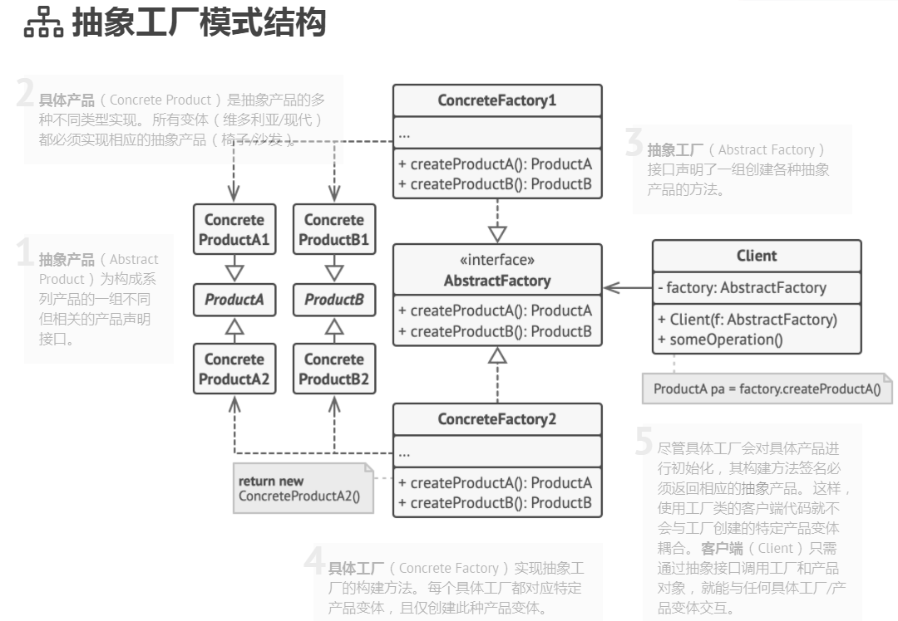

创建型模式
创建型模式提供了创建对象的机制， 能够提升已有代码的灵活性和可复用性。
单例模式
保证一个类只有一个实例(控制某些共享资源 （例如数据库或文件） 的访问权限);
为该实例提供一个全局访问节点。
- 实现
将默认构造函数设为私有: 防止其他对象使用单例类的 new运算符。 新建一个静态构建方法作为构造函数: 该函数会 “偷偷” 调用私有构造函数来创建对象， 并将其保存在一个静态成员变量中, 此后所有对于该函数的调用都将返回这一缓存对象。
class Singleton
{
private:
static Singleton * pinstance_;
static std::mutex mutex_;
protected:
Singleton(const std::string value): value_(value){}
~Singleton() {}
std::string value_;
public:
Singleton(Singleton &other) = delete;
void operator=(const Singleton &) = delete;
static Singleton *GetInstance(const std::string& value);
void SomeBusinessLogic(){// ...}
std::string value() const{
return value_;
}
};
/**
* Static methods should be defined outside the class.
*/
Singleton* Singleton::pinstance_{nullptr};
std::mutex Singleton::mutex_;
/**
* The first time we call GetInstance we will lock the storage location
* and then we make sure again that the variable is null and then we
* set the value. RU:
*/
Singleton *Singleton::GetInstance(const std::string& value)
{
std::lock_guard<std::mutex> lock(mutex_);
if (pinstance_ == nullptr)
{
pinstance_ = new Singleton(value);
}
return pinstance_;
}
void ThreadFoo(){
// Following code emulates slow initialization.
std::this_thread::sleep_for(std::chrono::milliseconds(1000));
Singleton* singleton = Singleton::GetInstance("FOO");
std::cout << singleton->value() << "\n";
}
void ThreadBar(){
// Following code emulates slow initialization.
std::this_thread::sleep_for(std::chrono::milliseconds(1000));
Singleton* singleton = Singleton::GetInstance("BAR");
std::cout << singleton->value() << "\n";
}
int main()
{
std::cout <<"If you see the same value, then singleton was reused (yay!\n" <<
"If you see different values, then 2 singletons were created (booo!!)\n\n" <<
"RESULT:\n";
std::thread t1(ThreadFoo);
std::thread t2(ThreadBar);
t1.join();
t2.join();
return 0;
工厂模式
定义一个创建对象的接口，让其子类自己决定实例化哪一个工厂类，工厂模式使其创建过程延迟到子类进行。
优点： 1、一个调用者想创建一个对象，只要知道其名称就可以了。 2、扩展性高，如果想增加一个产品，只要扩展一个工厂类就可以。 3、屏蔽产品的具体实现，调用者只关心产品的接口。
缺点：每次增加一个产品时，都需要增加一个具体类和对象实现工厂，使得系统中类的个数成倍增加，在一定程度上增加了系统的复杂度，同时也增加了系统具体类的依赖。这并不是什么好事。
//创建接口
//Shape.java
public interface Shape {
void draw();
}
//创建实现接口的实体类。
//Rectangle.java
public class Rectangle implements Shape {
@Override
public void draw() {
System.out.println("Inside Rectangle::draw() method.");
}
}
//Square.java
public class Square implements Shape {
@Override
public void draw() {
System.out.println("Inside Square::draw() method.");
}
}
//Circle.java
public class Circle implements Shape {
@Override
public void draw() {
System.out.println("Inside Circle::draw() method.");
}
}
//创建一个工厂，生成基于给定信息的实体类的对象。
//ShapeFactory.java
public class ShapeFactory {
//使用 getShape 方法获取形状类型的对象
public Shape getShape(String shapeType){
if(shapeType == null){
return null;
}
if(shapeType.equalsIgnoreCase("CIRCLE")){
return new Circle();
} else if(shapeType.equalsIgnoreCase("RECTANGLE")){
return new Rectangle();
} else if(shapeType.equalsIgnoreCase("SQUARE")){
return new Square();
}
return null;
}
}
//使用该工厂，通过传递类型信息来获取实体类的对象。
//FactoryPatternDemo.java
public class FactoryPatternDemo {
public static void main(String[] args) {
ShapeFactory shapeFactory = new ShapeFactory();
//获取 Circle 的对象，并调用它的 draw 方法
Shape shape1 = shapeFactory.getShape("CIRCLE");
//调用 Circle 的 draw 方法
shape1.draw();
//获取 Rectangle 的对象，并调用它的 draw 方法
Shape shape2 = shapeFactory.getShape("RECTANGLE");
//调用 Rectangle 的 draw 方法
shape2.draw();
//获取 Square 的对象，并调用它的 draw 方法
Shape shape3 = shapeFactory.getShape("SQUARE");
//调用 Square 的 draw 方法
shape3.draw();
}
}
抽象工厂模式
围绕一个超级工厂创建其他工厂, 该超级工厂又称为其他工厂的工厂;在抽象工厂模式中，接口是负责创建一个相关对象的工厂，
不需要显式指定它们的类。每个生成的工厂都能按照工厂模式提供对象。
如果代码需要与多个不同系列的相关产品交互， 但是由于无法提前获取相关信息， 或者出于对未来扩展性的考虑，
你不希望代码基于产品的具体类进行构建， 在这种情况下， 你可以使用抽象工厂。
抽象工厂为你提供了一个接口， 可用于创建每个系列产品的对象。 只要代码通过该接口创建对象，
那么你就不会生成与应用程序已生成的产品类型不一致的产品。
